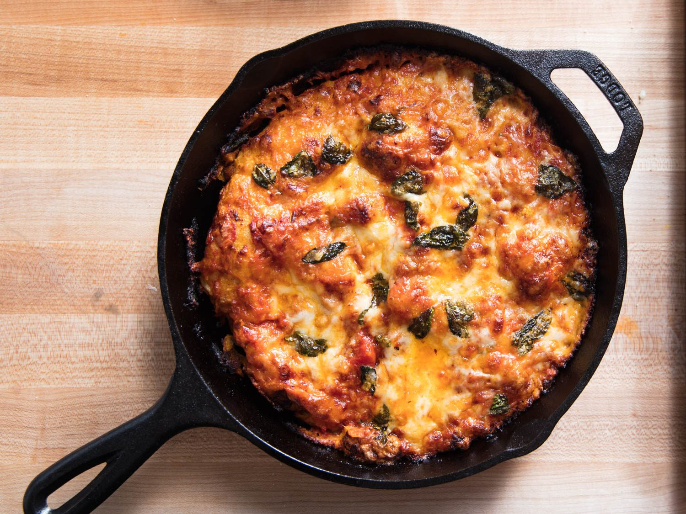
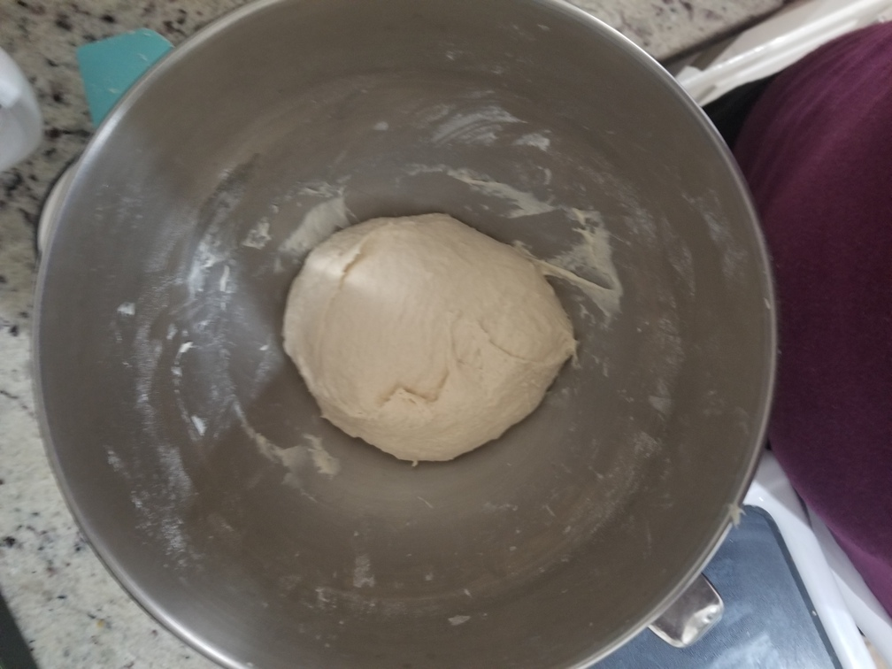
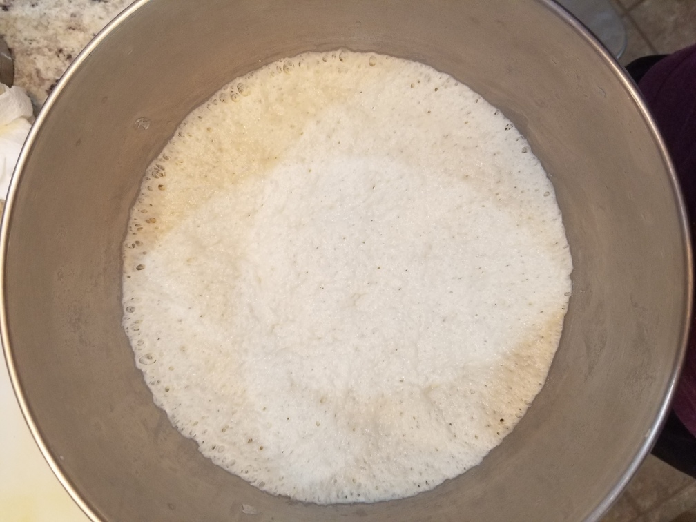
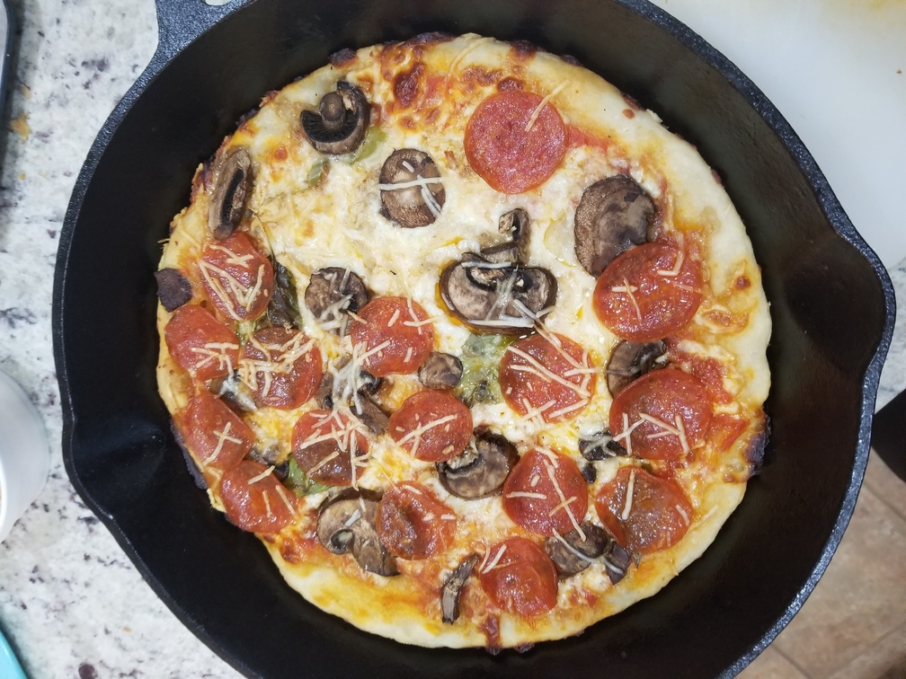
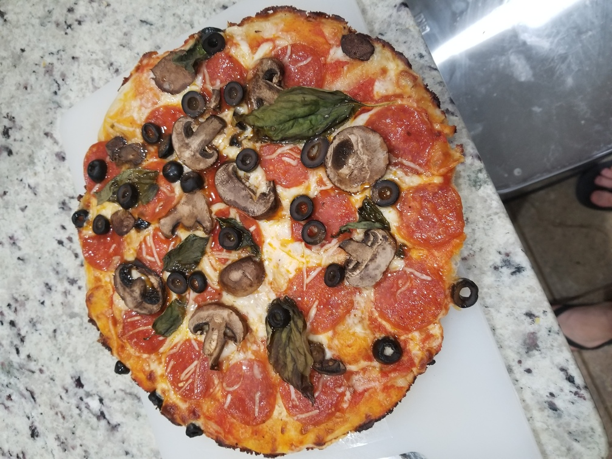

Fool Proof Pan Pizza
Originally from: Serious Eats

Ingredients
- 400g bread flour
- 10g kosher salt
- 4g (1 tsp) instant yeast
- 275g water
- 8g (~2 tsp) olive oil
Directions
- Combine ingredients - mix until no dry flour remains
- Cover bowl tightly with plastic wrap and rest in cool room for at least 8 hours. Dough should expand 4 - 6 times original size.
- Transfer to floured surface and divide into two. Form each half into tight ball.
- Pour 1 - 2 Tbl oil into two 10" cast iron pans. Roll ball around some, then flighten slightly so dough is a round uniform surface. Cover pans and let rise another 2 hours.
- Press dough to edge pan and remove any air bubbles. Top with around 3/4 cup sauce and remaining toppings.
- Bake for 12 - 15 minutes at 550°
Notes
-
2020-08-16 - Used base receipe but adapted for shortend time-frame. Pizza came out pretty good, guessing would be better with additional rise time. Used close to 1 1/2 tsp yeast, and kneaded in stand mixer for ~5 minutes. Let rise a little under four hours in warm humid room. Then followed recipe as written.



